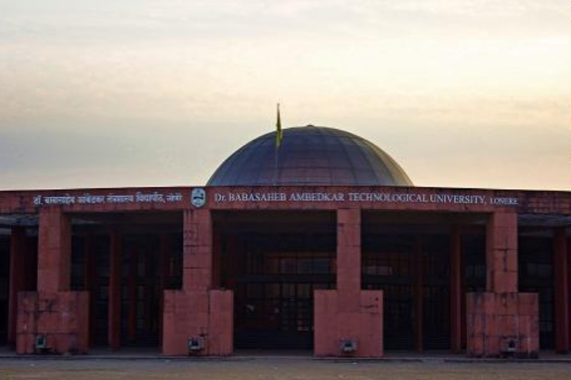
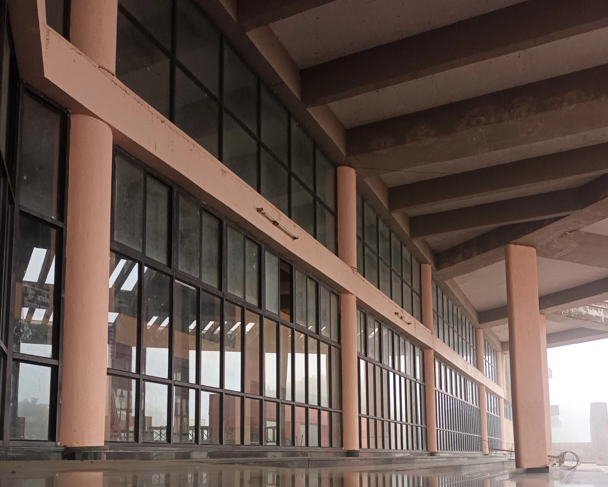
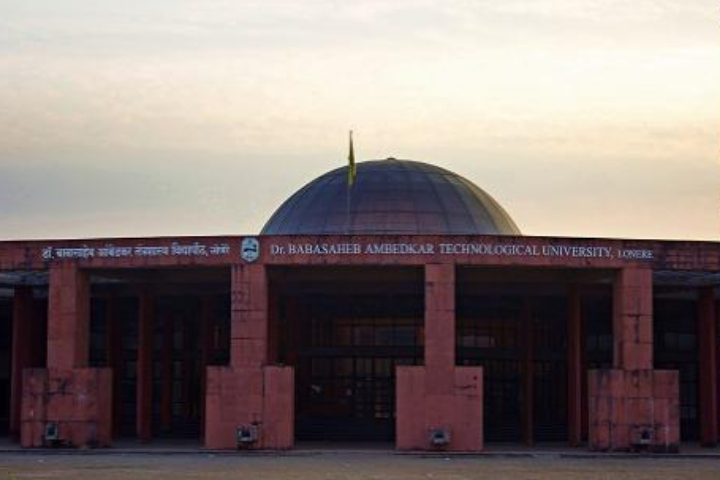
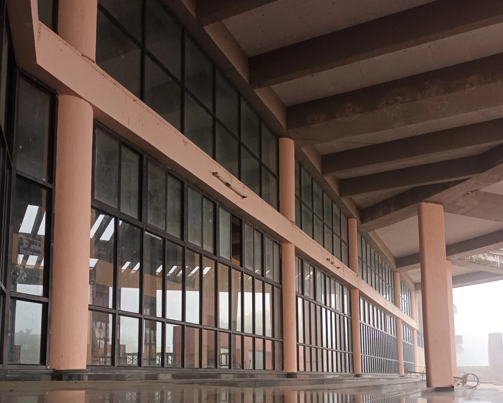

Dr. Babasaheb Ambedkar Technological University, Lonere
डॉ. बाबासाहेब आंबेडकर तंत्रशास्त्र विद्यापीठ
Lonere, Tal-Mangaon, Dist-Raigad (M.S.), India
About University
 



Dr. Babasaheb Ambedkar Technological University was established by the Government of Maharashtra vide Dr. Babasaheb Ambedkar Technological University Act. No. XXII of 1989 as a Unitary University. Later, the Government of Maharashtra converted this University to the Affiliating Technological University since 2016 vide Dr. Babasaheb Ambedkar Technological University Act No. XXIX of 2014 with the jurisdiction of the University as the entire state of Maharashtra.
Presently, 276 institutes are affiliated with the University, and the total student strength is 1,36,534.
The sprawling 468 acres of the campus of this University provides as a sanctum seat of learning across the state. The University attracts meritorious students from the entire state and molds them into employable engineers and competent technocrats. This University provides well-equipped laboratories with testing and analysis facilities that can be extended for the benefit of the industries. In addition, the University offers facilities like a conference hall, auditorium, playground, workshop, and computing facilities. The University has spacious and good hostels with all basic amenities.
The University is blessed with highly qualified faculty members who are committed to impart the best kind of knowledge through an effective teaching-learning process. The faculty and staff of the University believe that achieving excellence is a challenging task and they continuously strive for it.
University also provides a conducive environment and opportunities to the students for research and innovation, which leads to creating entrepreneurs. The University is empowered to affiliate Institutions that offer UG, PG, and Ph.D. level programs in the disciplines of Engineering, Pharmacy, Architecture, and Hotel Management & Catering Technology.
Mission and Vision
Mission
The University is committed to provide quality technical education, research and development services to meet the needs of industry, business, service sector, and society at large.
Vision
The University is committed to become a leading 'Center of Excellence' in the field of Engineering, Technology, and Science as a seat of learning with a national character and international outlook.
| Nature of University | State University |
|---|---|
| Type of University | Affiliating |
| Establishment Date of the University | 05-05-1989 |
| Main campus Area in Acres | 468 |
| Built up Area in sq.mts. | 79220.3 |
| Programmes Offered | Certificate, Diploma, U.G., P.G., Ph.D. |
| Acts of the University | Maharashtra Act Number 22 of 1989 Maharashtra Act Number 29 of 2014 |
| Rules and Regulations | First Rules And Regulations |
| Ordinances | First Ordinances July 2016 |
| Statutes | First Statutes |
| UGC act | UGC Act 1959 |